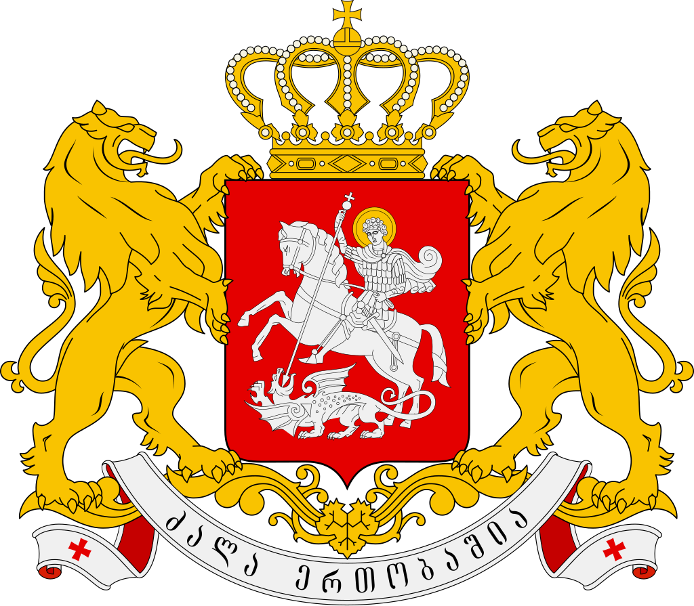
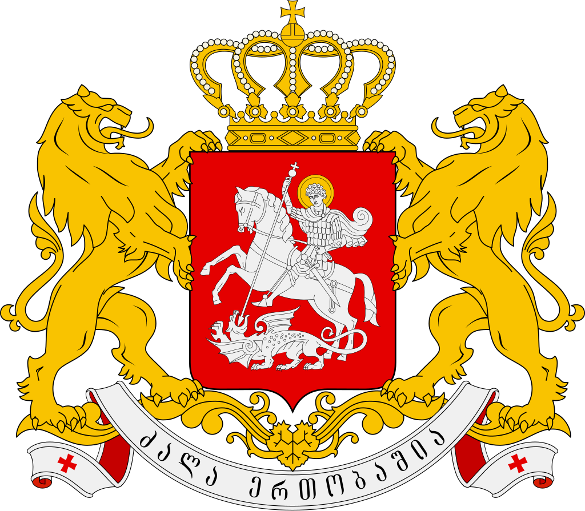
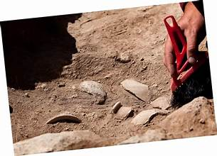
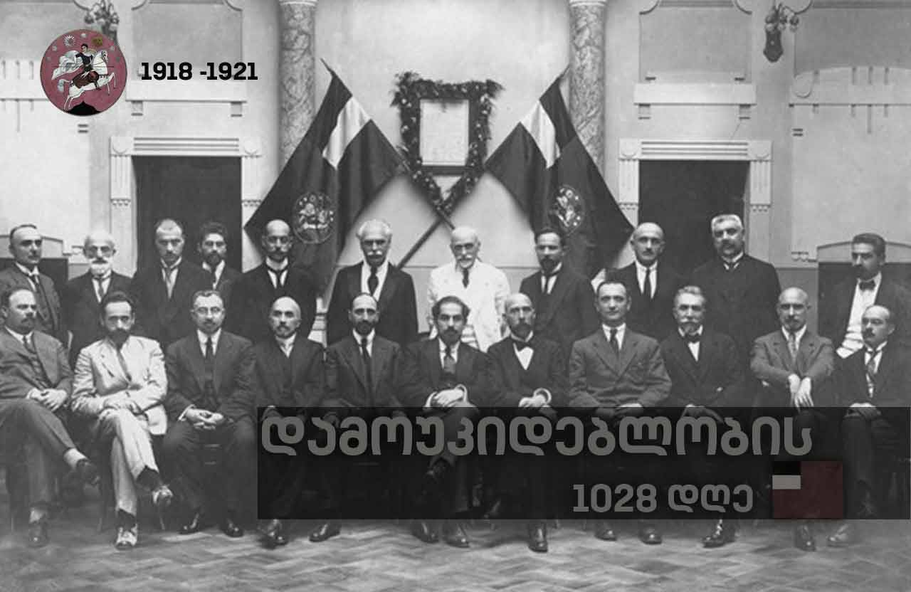

საქართველო არის ქვეყანა აღმოსავლეთ ევროპასა და დასავლეთ აზიაში. ის კავკასიის რეგიონის ნაწილია, დასავლეთით ესაზღვრება შავი ზღვა, ჩრდილოეთით და ჩრდილო-აღმოსავლეთით რუსეთი, სამხრეთ-დასავლეთით თურქეთი, სამხრეთით სომხეთი და სამხრეთ-აღმოსავლეთით აზერბაიჯანი. საქართველო მოიცავს 69,700 კვადრატულ კილომეტრს (26,900 კვ. მილი). მას აქვს 3,7 მილიონი მოსახლე, აქედან მესამედზე მეტი ცხოვრობს დედაქალაქსა და უდიდეს ქალაქში, თბილისში. ქართველები, რომლებიც ამ რეგიონის მკვიდრნი არიან, შეადგენენ ქვეყნის მოსახლეობის უმრავლესობას და წარმოადგენენ მის ტიტულოვან ერს.
 

საქართველო დასახლებული იყო პრეისტორიიდან მოყოლებული, მასპინძლობს მეღვინეობის, ოქროს მოპოვებისა და ქსოვილების მსოფლიოში ყველაზე ადრეულ ცნობილ ადგილებს. კლასიკურ ხანაში გაჩნდა რამდენიმე სამეფო, როგორიცაა კოლხეთი და იბერია, რომლებმაც შექმნეს თანამედროვე ქართული სახელმწიფოს ბირთვი. IV საუკუნის დასაწყისში ქართველებმა ოფიციალურად მიიღეს ქრისტიანობა, რამაც ხელი შეუწყო მათ გაერთიანებას საქართველოს სამეფოს ქვეშ.
არქაული ადამიანების უძველესი კვალი დღევანდელ საქართველოში თარიღდება დაახლოებით 1,8 მილიონი წლის წინ, დმანისის ჰომინინების სახით, ჰომო ერექტუსის ქვესახეობა, რომელიც წარმოადგენს ევრაზიაში ჰომინინების უძველეს ცნობილ ნამარხებს. კავკასიის მიერ ბუფერული და შავი ზღვის ეკოსისტემით მოსარგებლე რეგიონი, როგორც ჩანს, თავშესაფარი იყო მთელი პლეისტოცენის პერიოდში, ხოლო პირველი უწყვეტი პრიმიტიული დასახლებები თარიღდება შუა პალეოლითიდან, დაახლოებით 200000 წლის წინ.
საქართველოს სამეფომ ზენიტს მიაღწია XII-XIII საუკუნეების დასაწყისში. დავით IV-ის (1089–1125 წწ.) და მისი შვილიშვილი თამარის (1184–1213 წწ.) მეფობის ამ პერიოდს ფართოდ უწოდებდნენ ქართულ ოქროს ხანას. ეს ადრეული ქართული რენესანსი, რომელიც წინ უძღოდა მის დასავლეთ ევროპულ ანალოგს, ხასიათდებოდა შთამბეჭდავი სამხედრო გამარჯვებებით, ტერიტორიული გაფართოებით და კულტურული რენესანსით არქიტექტურაში, ლიტერატურაში, ფილოსოფიასა და მეცნიერებებში.[61] საქართველოს ოქროს ხანამ დატოვა დიდი საკათედრო ტაძრები, რომანტიული პოეზია და ლიტერატურა და ეპიკური პოემა „ვეფხისტყაოსანი“, რომელიც ეროვნულ ეპოსად ითვლება.
რუსეთის მმართველობა ქართველებს გარე საფრთხეებისგან დაცვას სთავაზობდა, თუმცა ხშირად მძიმე და უგრძნობი იყო. მე-19 საუკუნის ბოლოს, რუსეთის ხელისუფლების მიმართ უკმაყოფილება გადაიზარდა ეროვნულ აღორძინების მოძრაობაში, რომელსაც ხელმძღვანელობდა ილია ჭავჭავაძე. ამ პერიოდმა ასევე მოიტანა სოციალური და ეკონომიკური ცვლილებები საქართველოში, ახალი სოციალური კლასების გაჩენით: ყმების ემანსიპაციამ გაათავისუფლა მრავალი გლეხი, მაგრამ ცოტა რამ შეამსუბუქა მათ სიღარიბეს; კაპიტალიზმის ზრდამ საქართველოში ურბანული მუშათა კლასი შექმნა. როგორც გლეხებმა, ისე მუშებმა თავიანთი უკმაყოფილება გამოხატეს აჯანყებებითა და გაფიცვებით, რაც დასრულდა 1905 წლის რევოლუციით. მათ საქმეს იცავდნენ სოციალისტი მენშევიკები, რომლებიც გახდნენ დომინანტური პოლიტიკური ძალა საქართველოში რუსეთის მმართველობის ბოლო წლებში.
1918 წლის საქართველო-სომხეთის ომი, რომელიც დაიწყო სომხეთსა და საქართველოს შორის სადავო პროვინციების ნაწილზე, რომლებიც ძირითადად სომხებით იყო დასახლებული, დასრულდა ბრიტანეთის ინტერვენციის გამო. 1918–1919 წლებში ქართველი გენერალი გიორგი მაზნიაშვილი ხელმძღვანელობდა შეტევას თეთრი არმიის წინააღმდეგ მოისეევისა და დენიკინის მეთაურობით შავი ზღვის სანაპიროზე ტუაფსედან სოჭამდე და ადლერში დამოუკიდებელი საქართველოსთვის. 1920 წელს საბჭოთა რუსეთმა მოსკოვის ზავით ცნო საქართველოს დამოუკიდებლობა. მაგრამ აღიარება ნაკლებად ღირებული აღმოჩნდა, რადგან 1921 წელს წითელი არმია შემოიჭრა საქართველოში და 1922 წელს ოფიციალურად შეუერთა იგი საბჭოთა კავშირს.
